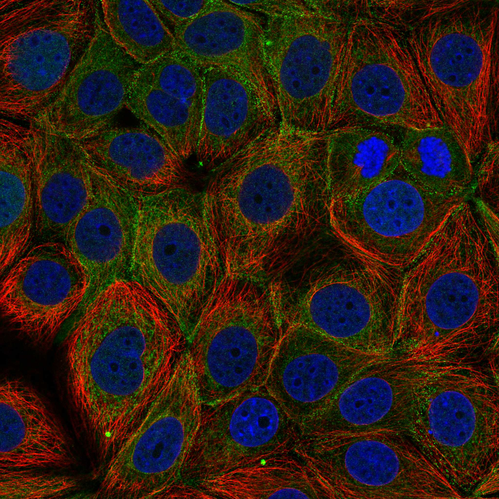
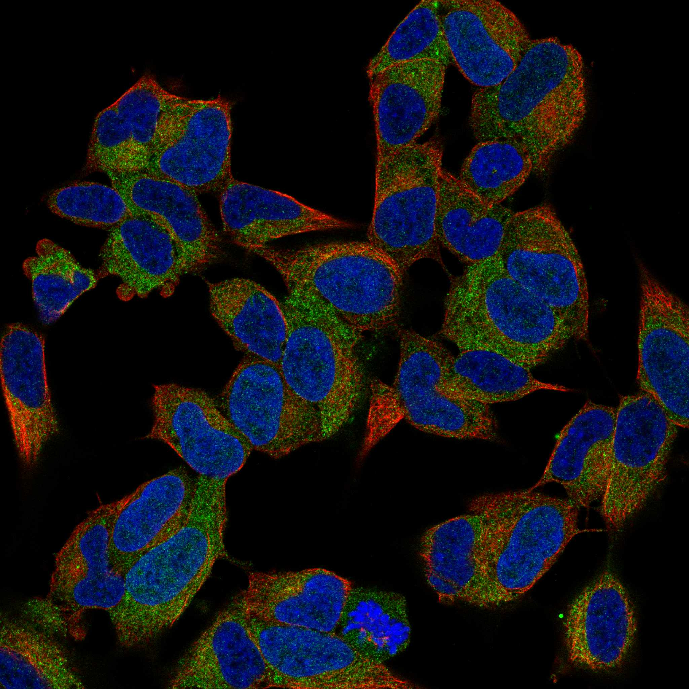

type: protein-evaluation gene: "DLGAP3" date: 2026-06-03 tags: [protein-scout, rejected, evaluation] status: rejected ---
DLGAP3 — REJECTED (核定位证据不足 (核定位得分 2/10 ≤ 3))
1. 基本信息
| 项目 | 内容 |
|---|---|
| 基因名 / 别名 | DLGAP3 / DAP3 |
| 蛋白名称 | Disks large-associated protein 3 |
| 蛋白大小 | 979 aa / 106.0 kDa |
| UniProt ID | O95886 |
| 评估日期 | 2026-06-03 |
IF 图像:  
2. 评分总览
| 维度 | 得分 | 满分 | 加权后 | 关键证据摘要 |
|---|---|---|---|---|
| 🔴 核定位特异性 | 2/10 | ×4 | 8 | HPA: Endoplasmic reticulum, Plasma membrane; 额外: Midbody; UniProt: Cell membrane; Postsynaptic density; Synapse |
| 📏 蛋白大小 | 8/10 | ×1 | 8 | 979 aa / 106.0 kDa |
| 🆕 研究新颖性 | 10/10 | ×5 | 50 | PubMed strict=17 篇 (≤20→10) |
| 🏗️ 三维结构 | 6/10 | ×3 | 18 | AlphaFold v6 pLDDT=50.1; PDB: 无 |
| 🧬 调控结构域 | 7/10 | ×2 | 14 | InterPro: IPR005026; Pfam: PF03359 |
| 🔗 PPI 网络 | 3/10 | ×3 | 9 | STRING 15 partners; IntAct 0 interactions |
| ➕ 互证加分 | — | max +3 | 0.5 | PDB+AF+STRING+IntAct cross-validation |
| 原始总分 | 107.5/180 | |||
| 归一化总分 | 59.7/100 |
3. 详细分析
3.1 核定位证据
| 来源 | 定位 | 可信度 |
|---|---|---|
| Protein Atlas (IF) | Endoplasmic reticulum, Plasma membrane; 额外: Midbody | Approved |
| UniProt | Cell membrane; Postsynaptic density; Synapse | Swiss-Prot/TrEMBL |
IF 图像获取: IF图像已下载并嵌入 (2张)
GO Cellular Component:
- cholinergic synapse (GO:0098981)
- glutamatergic synapse (GO:0098978)
- neuromuscular junction (GO:0031594)
- plasma membrane (GO:0005886)
- postsynaptic density (GO:0014069)
- postsynaptic specialization (GO:0099572)
结论: 核定位证据极弱，主要数据源均不指向细胞核。
3.2 蛋白大小评估
评价: 大小基本合适，可用于常规实验。
3.3 研究现状
| 指标 | 数值 |
|---|---|
| PubMed strict count | 17 |
| PubMed broad count | 28 |
| 别名(未计入scoring) | Aliases observed but not used for scoring: DAP3 |
关键文献: 1. Astrocyte-neuron subproteomes and obsessive-compulsive disorder mechanisms.. *Nature*. PMID: 37046092 2. Gene expression profiling predicts pathways and genes associated with Parkinson's disease.. *Neurological sciences : official journal of the Italian Neurological Society and of the Italian Society of Clinical Neurophysiology*. PMID: 26269422 3. Exonic resequencing of the DLGAP3 gene as a candidate gene for schizophrenia.. *Psychiatry research*. PMID: 23414653 4. Interaction between genetic variants of DLGAP3 and SLC1A1 affecting the risk of atypical antipsychotics-induced obsessive-compulsive symptoms.. *American journal of medical genetics. Part B, Neuropsychiatric genetics : the official publication of the International Society of Psychiatric Genetics*. PMID: 21990008 5. Family-based genetic association study of DLGAP3 in Tourette Syndrome.. *American journal of medical genetics. Part B, Neuropsychiatric genetics : the official publication of the International Society of Psychiatric Genetics*. PMID: 21184590
评价: 极度新颖，几乎未被系统研究（PubMed ≤20篇）。
3.4 三维结构分析
| 指标 | 数值 |
|---|---|
| AlphaFold 版本 | v6 |
| AlphaFold 平均 pLDDT | 50.1 |
| 高置信度残基 (pLDDT>90) 占比 | 9.8% |
| 置信残基 (pLDDT 70-90) 占比 | 6.8% |
| 中等置信 (pLDDT 50-70) 占比 | 10.3% |
| 低置信 (pLDDT<50) 占比 | 73.0% |
| 有序区域 (pLDDT>70) 占比 | 16.6% |
| 可用 PDB 条目 | 无 |
PAE 图像说明: AlphaFold PAE 图像已重新获取并嵌入（见下方 PAE 图像修正块）；结构判断仍结合 pLDDT 与 PAE 综合判断。
评价: AlphaFold 预测质量有限（pLDDT=50.1），有序残基占 16.6%。
3.5 结构域分析
| 来源 | 结构域 |
|---|---|
| InterPro/Pfam | InterPro: IPR005026; Pfam: PF03359 |
染色质调控潜力分析: 存在已知结构域注释，可作为功能研究的结构基础。
3.6 PPI 网络
STRING 预测互作 (combined score >0.4):
| Partner | Combined Score | Experimental | 功能类别 |
|---|---|---|---|
| DLG4 | 0.993 | 0.277 | — |
| SHANK3 | 0.992 | 0.871 | — |
| SLITRK5 | 0.937 | 0.046 | — |
| SHANK1 | 0.920 | 0.507 | — |
| SHANK2 | 0.917 | 0.304 | — |
| GRASP | 0.887 | 0.095 | — |
| DLGAP2 | 0.868 | 0.507 | — |
| DLG2 | 0.847 | 0.174 | — |
| DLG3 | 0.835 | 0.090 | — |
| HOMER1 | 0.816 | 0.067 | — |
实验验证互作 (IntAct):
| Partner | 方法 | PMID |
|---|---|---|
| — | — | — |
PPI 互证分析:
- 仅STRING预测
- STRING partners: 15，IntAct interactions: 0
- 调控相关比例: 0 / 15 = 0%
评价: STRING 15 个预测互作，IntAct 0 个实验互作。调控相关配体占比 0%。
3.7 多库互证
| 维度 | 来源 | 结果 | 是否一致 |
|---|---|---|---|
| 三维结构 | AlphaFold pLDDT=50.1 + PDB: 无 | pLDDT=50.1, v6 | 仅预测 |
| 定位 | UniProt + HPA | Cell membrane; Postsynaptic density; Synapse / Endoplasmic reticulum, Plasma membrane; 额外: Midbod | 一致 |
| PPI | STRING + IntAct | 15 + 0 interactions | 数据有限 |
互证加分明细:
- 多库定位一致 (3源): +0.5
- STRING + IntAct 双源验证: +0
- 结构域 + AlphaFold 质量: +0
- PDB 多条目覆盖: +0
总分: +0.5 / max +3
4. 总体评价
推荐等级: ⭐⭐⭐ (REJECTED)
核心优势: 1. DLGAP3 — Disks large-associated protein 3，极度新颖，几乎未被系统研究（PubMed ≤20篇）。 2. 蛋白大小979 aa，大小基本合适，可用于常规实验。
风险/不确定性: 1. PubMed 17 篇，研究基础极有限，功能注释不完整 2. AlphaFold 预测质量一般（pLDDT=50.1），需要更多实验结构验证
下一步建议:
- [ ] 查阅最新关键文献补充研究背景
- [ ] 获取 Protein Atlas IF 图像确认亚细胞定位
- [ ] 设计体外实验验证核定位及潜在调控功能
- [ ] 该蛋白核定位证据不足（≤3/10），不建议作为核蛋白研究目标。
5. 数据来源
- UniProt: https://www.uniprot.org/uniprotkb/O95886
- Protein Atlas: https://www.proteinatlas.org/ENSG00000116544-DLGAP3/subcellular
- PubMed: https://pubmed.ncbi.nlm.nih.gov/?term=DLGAP3
- AlphaFold: https://alphafold.ebi.ac.uk/entry/O95886
- STRING: https://string-db.org/network/9606.ENSP00000
- Packet data timestamp: 2026-06-03 12:15:38
<!-- AF_PAE_REPAIR_START --> PAE 图像修正（2026-06-05）: AlphaFold 提供 predicted aligned error 图像；此前“PAE 图像暂无数据”的表述为未获取/未嵌入导致。